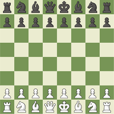

Email: Phantyler12@gmail.com
Phone Number: (360) 787-8654
I am an highly motivated and promising Software Engineer with a foundation in web development. Currently enrolled in SpringBoard Software Development Career Program to further develop my skills. Passionate about continuous learning and eager to contribute to innovative projects.
| Tools | Description | Experience |
|---|---|---|
| GitHub | GitHub is more than just a code repository; it's a collaborative platform that has redefined how developers work together. GitHub is a cornerstone of modern software development, offering powerful version control features, issue tracking, and seamless collaboration. | Beginner |
| Visual Studio Code | Visual Studio Code, also commonly referred to as VS Code, is a source-code editor developed by Microsoft for Windows, Linux, macOS and web browsers. Features include support for debugging, syntax highlighting, intelligent code completion, snippets, and code refactoring. | Intermediate |
| Jira | Jira, by Atlassian, is synonymous with agile project management. Its flexibility allows teams to tailor workflows, track issues, and plan sprints, making it a go-to tool for organizations practicing agile methodologies. | Beginner |
A web application that replicates key functionalities of YouTube, providing users with the ability to upload, view, and interact with video content.
Developed a fully functional digital version of the classic chess game.The project includes designing the game interface, implementing chess rules, and ensuring a seamless user experience.
Created a fully functional, user-friendly calculator application that mimics the behavior of standard physical calculators.
I am always willing to learn new things and connect with others! Find me on:
GitHub